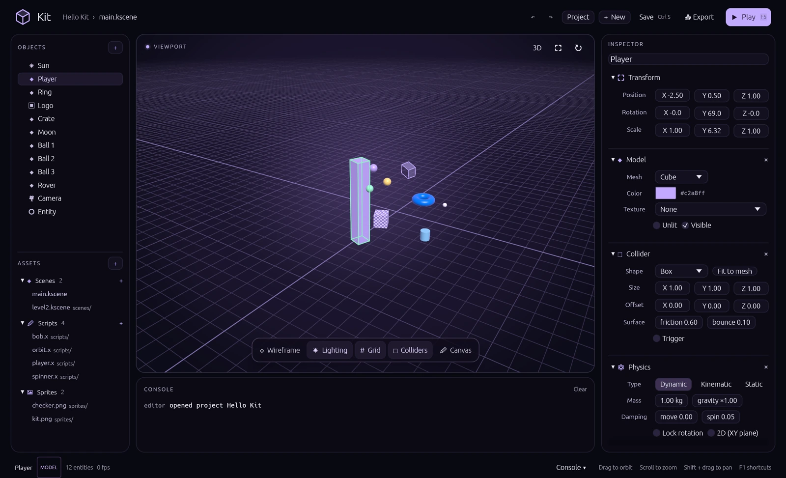
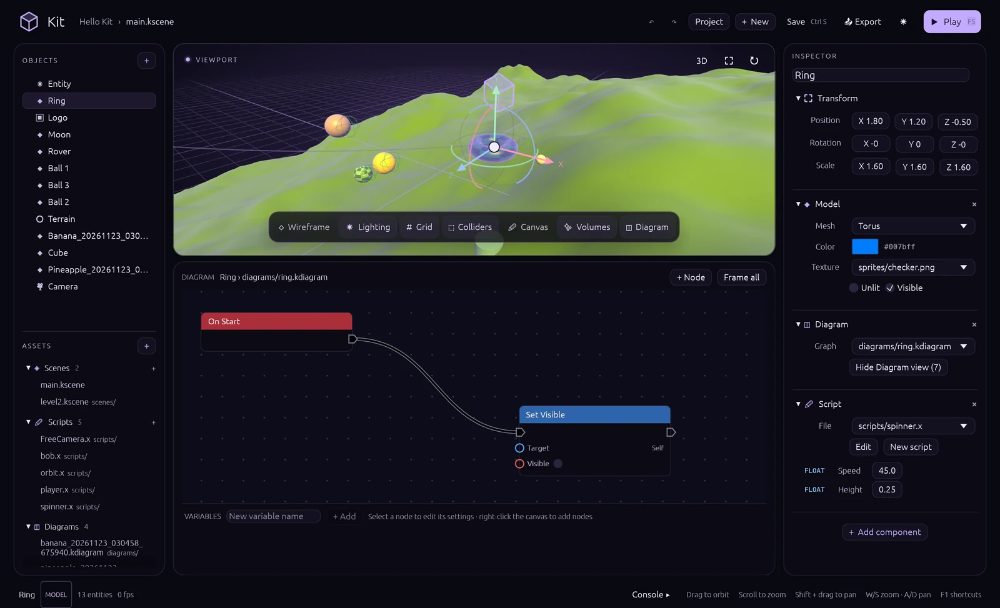
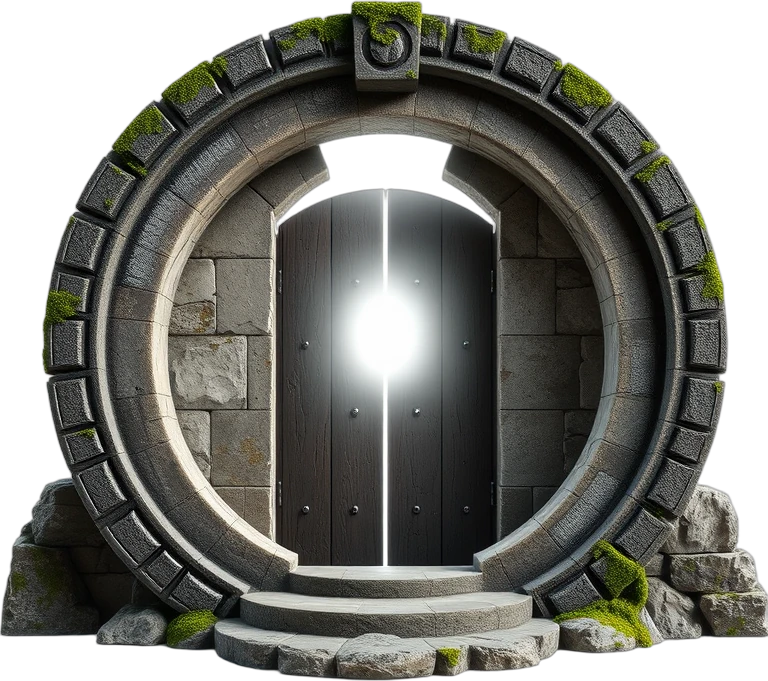
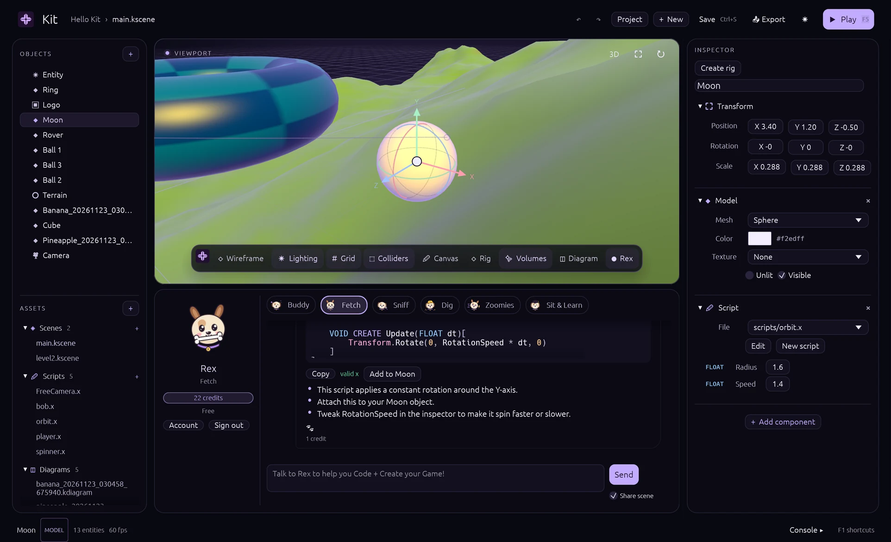
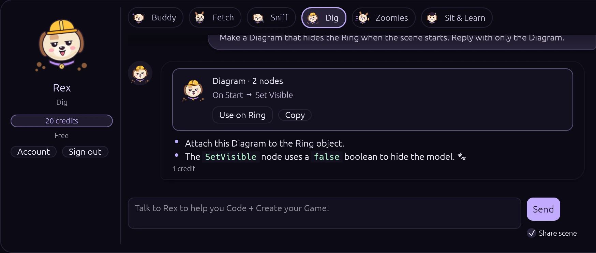
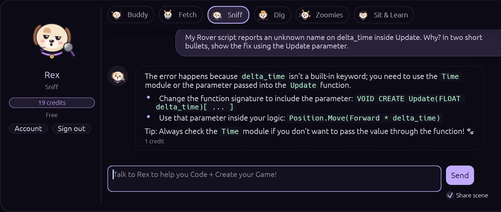

A 2D & 3D GAME ENGINE
Draw a path.
Press play.
Sketch motion in the viewport, build worlds with your own art, and share a game someone else can play.
Linux · macOS · Windows
New in v0.0.5: Super Multiplayer, the easiest multiplayer in game development

THE EDITOR
See the work take shape.
Arrange your scene, sculpt terrain, or wire up a script. Press F5 to run the game in the same window.

Scene editing in Kit’s native editor.
VISUAL LOGIC
Events in.
Actions out.
Connect events to actions with nodes and wires. Build behavior in a Diagram beside the scene it controls, with the object and its settings still in view.
See Diagram in the editor
FORGE · 3D WORKSHOP
Turn a sentence
into a 3D model.
Make a reference image and textured model locally, then bring the GLB into Kit. FORGE is a separate companion app for compatible AMD PCs.
Kit runs on Linux, macOS, and Windows. FORGE currently requires Windows and compatible AMD hardware.
CANVAS PLAYGROUND
Draw the motion.
Draw a route across the grid, then play it. This browser preview shows the idea behind Kit’s Canvas mode.
Try the example route or drag to draw your own.
FORGE ASSETS
Bring your own world.
Import GLB, glTF, FBX, OBJ, USDZ, or STL. Kit can bring in base-color textures and baked animation clips with supported source files.



REX AI
Bring your game ideas to life with Rex.
Go from idea to playable faster. Rex is your AI game development companion inside Kit. Create gameplay, build visual logic, and tackle bugs right in the editor. Press 8 to get started.


Fetch writes gameplay scripts
Imagine what you want an object to do and describe it in your own words. Fetch writes the script, and one click attaches it to your selected object.


Dig builds Diagrams
Describe how your game should work and Dig turns it into a visual blueprint. Connect events and actions on the Diagram board, then tweak the nodes as your ideas evolve.


Sniff helps you fix bugs
Get unstuck when gameplay goes sideways. Sniff explains errors, helps you track down what went wrong, and suggests fixes you can try right away.
NEW · SUPER MULTIPLAYER
The easiest multiplayer
in game development. Ever.
No servers to write, rent or run. Install Multiplayer from Project → Circuit Manager, tick Realtime Sync on the objects you want to share, and press Play. Kit handles the rest.
- 1
Install
Project → Circuit Manager → Multiplayer. Your project, your version, removable any time.
- 2
Tick a box
+ Add component → Realtime Sync. Turn on One per player for your hero.
- 3
Press Play
Click 👥 +1 player to open more windows and watch everyone move in Scene View.
Worlds, scenes and rooms
Each game gets a world. Every scene is a room, and a full room opens a new instance on its own. Friends in a party land together. Scene.Load takes players along.
Only what changes
A moving player is about 22 bytes. Rendering, terrain and physics shapes never touch the network, and each player only gets who's nearby.
Seed + diff worlds
Generate a world from a seed and sync only what players change. Latecomers rebuild it locally, and an unchanged chunk costs 17 bytes to confirm.
Shared state, done right
Scores, timers, weather and quest flags, with revisions so a stale update never overwrites a newer one. Players need no accounts.
START WITH THE EXAMPLE
Make it playable.
Build in Rust-powered Kit, script gameplay in x, then export to desktop or the browser.